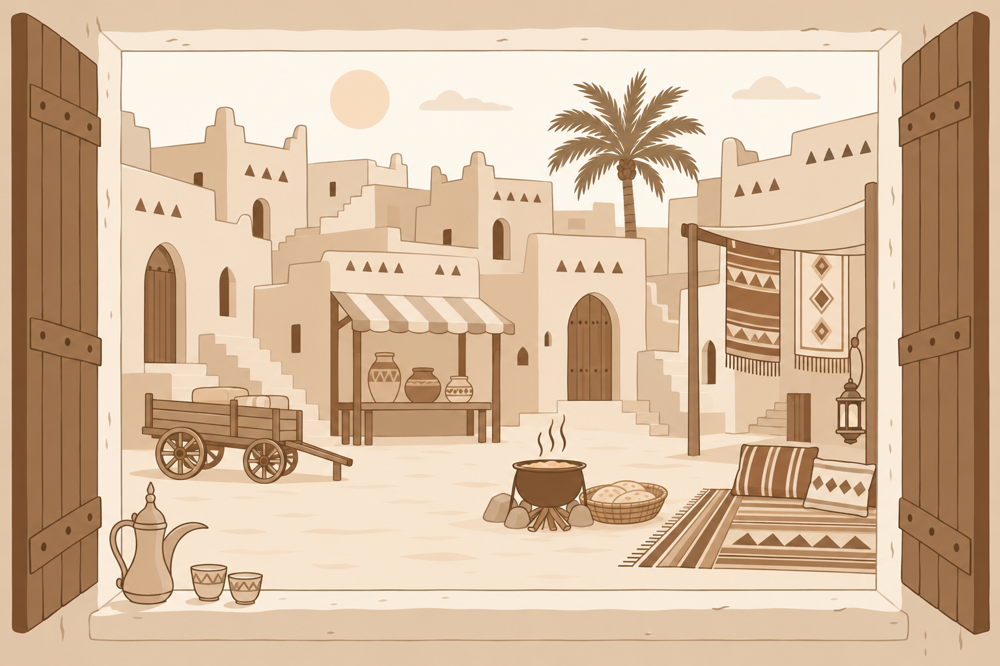

نافذة على يوم من الماضي
خلف كل تفصيلة حكاية؛ اختر إحدى العلامات واكتشفها.

ساحة نجدية · مشهد تخيّلي من الماضيديمو لتجربة نافذة الماضي — الصفحة الرئيسية الحالية محفوظة كما هي.
خلف كل تفصيلة حكاية؛ اختر إحدى العلامات واكتشفها.

ساحة نجدية · مشهد تخيّلي من الماضيديمو لتجربة نافذة الماضي — الصفحة الرئيسية الحالية محفوظة كما هي.